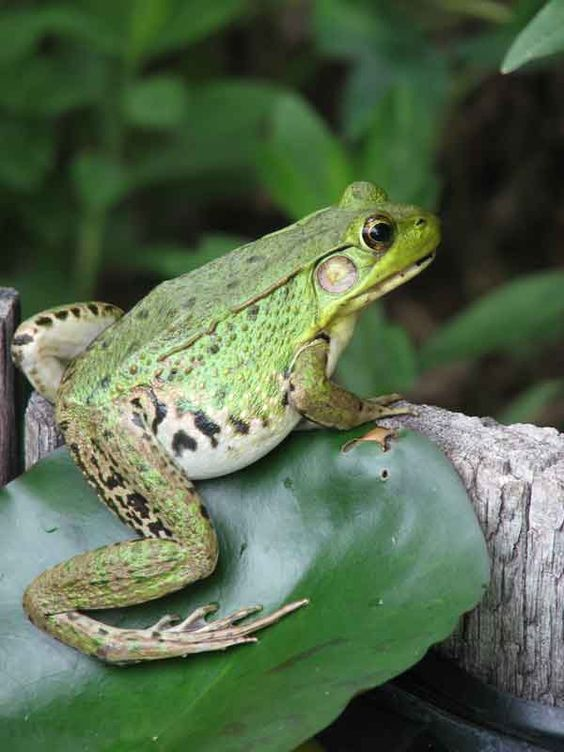
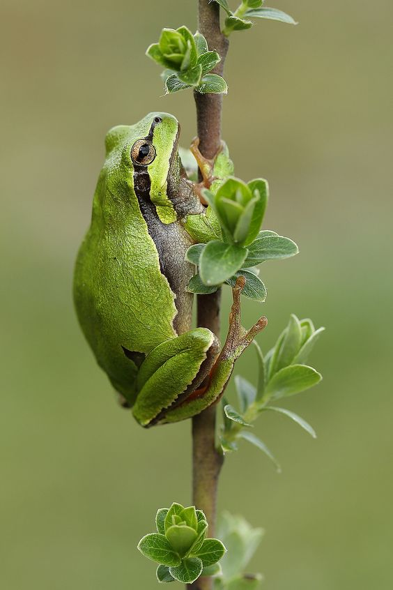
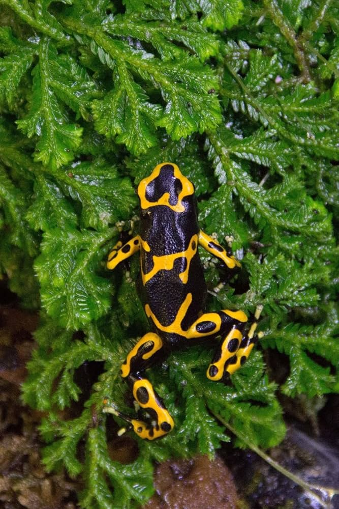
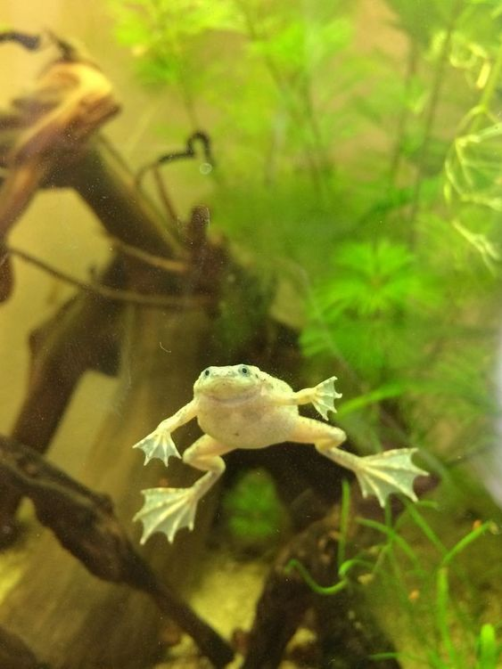
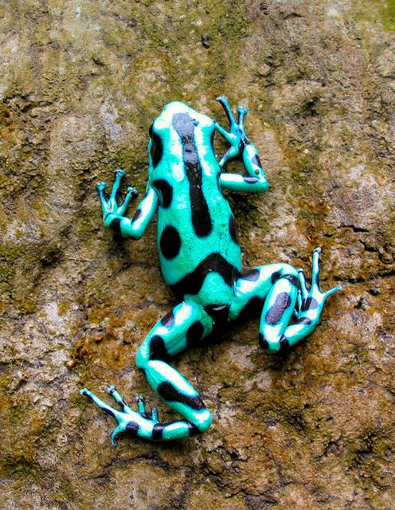
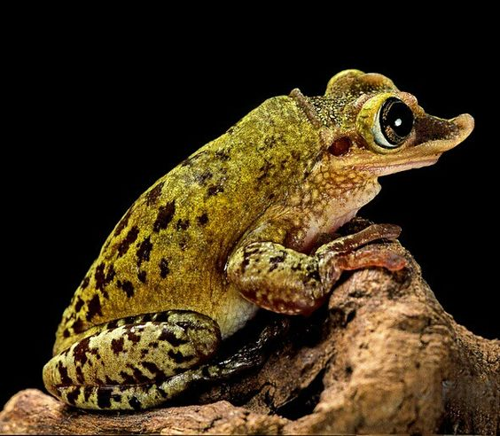

Типи жаб
1. Африканська Шпорцева Жаба (Xenopus laevis)
Африканські шпорцеві жаби – це водяні жаби, які легко адаптуються до життя в акваріумах. Вони мають гладку шкіру і характерні "шпори" на задніх ногах.
2. Деревна Жаба (Hyla spp.)
Деревні жаби відомі своїми яскравими кольорами та здатністю лазити по вертикальних поверхнях. Вони зазвичай ведуть нічний спосіб життя.
3. Рогата Жаба (Ceratophrys spp.)
Рогаті жаби, або жаби-пакмани, мають великі роти і характерні рогові вирости над очима. Вони досить пасивні і проводять багато часу зарившись у ґрунт.
4. Жаба-Повитуха (Alytes obstetricans)
Жаби-повитухи отримали свою назву завдяки самцям, які носять яйця на задніх ногах до вилуплення. Вони мають цікавий спосіб розмноження і догляду за потомством.
5. Жаба-Древолаз (Dendrobates spp.)
Жаби-древолази, також відомі як отруйні жаби, мають яскраві забарвлення і невеликі розміри. Вони вимагають спеціальних умов утримання, але дуже популярні серед любителів екзотики.
6. Білопузий Ксантус (Bombina orientalis)
Ці жаби мають яскраві черевця і часто зустрічаються в домашніх тераріумах. Вони активні вдень і досить невибагливі в догляді.
7. Американський Булфрог (Lithobates catesbeianus)
Американські булфроги є одними з найбільших жаб, які часто утримуються в неволі. Вони потребують просторих водойм і можуть видавати гучні звуки.
психоголія поведінки
Жаби зазвичай проявляють спокійну та пасивну поведінку, проводячи багато часу нерухомо, особливо вдень. Більшість жаб ведуть нічний спосіб життя, проявляючи більшу активність у темний час доби, коли вони виходять на полювання. Самці жаб можуть виявляти територіальну поведінку, особливо під час шлюбного сезону, позначаючи свою територію звуками та залучаючи самок.
Жаби використовують різні звуки для комунікації, включаючи квакання та свистіння. Вони, як правило, ведуть одиночний спосіб життя і зустрічаються з іншими особинами лише для розмноження. Під час шлюбного сезону самці активно залучають самок звуками, а деякі види навіть виконують ритуальні танці.
Полюючи на комах та інших дрібних безхребетних, жаби використовують свої липкі язики для захоплення здобичі. Вони мають добре розвинені рефлекси і можуть швидко реагувати на рух здобичі. Жаби часто застосовують камуфляж для маскування, що допомагає їм уникати хижаків та успішно полювати. Деякі види можуть впадати в зимову сплячку, зарившись у ґрунт або занурюючись у воду для збереження енергії.
Жаби можуть відчувати стрес через неправильні умови утримання, недостаток схованок, яскраве освітлення або часте втручання людини. Ознаками стресу можуть бути відмова від їжі, постійне ховання, неприродна активність або пасивність, а також зміни в забарвленні шкіри. Жаби не є соціальними тваринами, але деякі види можуть звикнути до присутності людини. Вони можуть сприймати годування з рук, але зазвичай не люблять частого втручання. Для забезпечення комфортного життя жабам потрібні схованки та місця, де вони можуть почуватися в безпеці.
догляд
вибір та підготовка житла
Тип житла
Для жаб важливо вибрати відповідний тип житла, який забезпечить комфортні умови для їхнього життя. Залежно від виду жаб, ви можете вибрати акваріум або тераріум.
Акваріуми підходять для водяних видів жаб, таких як африканська шпорцева жаба. Акваріуми повинні бути достатньо великими, щоб забезпечити жабам простір для плавання. Мінімальний розмір акваріума для однієї водяної жаби - 40 літрів. Необхідно також врахувати додатковий обсяг, якщо у вас більше ніж одна жаба.
Тераріуми ідеальні для наземних або деревних жаб, таких як рогата жаба або деревна жаба. Тераріуми повинні мати достатньо місця для пересування, лазання та схованок. Мінімальний розмір тераріума для однієї наземної жаби - 60 х 30 х 30 см, але завжди краще забезпечити більше простору.
Підготовка житла
Субстрат
Вибір субстрату залежить від виду жаби. Для водяних жаб використовуйте чистий гравій або спеціальний акваріумний пісок. Наземні жаби потребують субстрату, який імітує природні умови, наприклад, кокосове волокно, мох або суміш ґрунту та піску. Важливо уникати субстратів, які жаби можуть проковтнути і які можуть завдати шкоди їхньому здоров'ю.
Декорації
Декорації в житлі жаб мають не лише естетичну, але й функціональну роль. Використовуйте корчі, каміння, живі або штучні рослини та спеціальні укриття. Живі рослини допомагають підтримувати вологість і створюють природне середовище. Укриття необхідні для того, щоб жаби могли ховатися і відчувати себе в безпеці. Розташовуйте декорації так, щоб забезпечити жабам можливість активного переміщення.
Вода
Якщо у вас водяні жаби, акваріум має бути заповнений чистою водою. Важливо використовувати акваріумні фільтри для підтримання чистоти води та уникати хлорованої води, оскільки хлор шкідливий для жаб. Ви можете використовувати спеціальні кондиціонери для води, щоб видалити хлор та інші шкідливі речовини.
Температура та Вологість
Забезпечте належний температурний режим і вологість у житлі жаб. Для цього використовуйте нагрівальні лампи або нагрівальні елементи, встановлені у тераріумі або акваріумі. Оптимальна температура для більшості жаб коливається в межах 22-28°C. Для підтримання вологості на рівні 60-80% регулярно обприскуйте тераріум водою та використовуйте зволожувачі. Термометри та гігрометри допоможуть вам контролювати ці параметри.
Освітлення
Правильне освітлення є важливим аспектом догляду за жабами. Використовуйте лампи з ультрафіолетовим випромінюванням (UVB), які допомагають жабам синтезувати вітамін D3. Установіть лампи так, щоб забезпечити денний і нічний цикли, з 10-12 годин освітлення на добу. Використовуйте таймери для автоматичного регулювання освітлення, щоб уникнути стресу у жаб через неправильний світловий режим.
Фільтрація та Аерація
В акваріумах необхідно забезпечити хорошу фільтрацію води, щоб підтримувати її чистоту і якість. Використовуйте внутрішні або зовнішні фільтри, які підходять за об'ємом вашого акваріума. Водяні жаби також потребують належної аерації води, що можна досягти за допомогою акваріумних компресорів і розпилювачів.
Регулярне Прибирання
Житло жаб потребує регулярного прибирання для підтримання здорових умов. Замінюйте воду в акваріумі щотижня, чистіть субстрат та декорації, видаляйте залишки їжі та екскременти. Повне прибирання тераріума з заміною субстрату рекомендується проводити щомісяця. Використовуйте безпечні для жаб миючі засоби і уникайте хімічних речовин.
Годування
Основні Принципи Годування
Жаби є хижаками, і їхній раціон повинен складатися з живої їжі. Основний корм для жаб включає комах та інших дрібних безхребетних. Різні види жаб мають різні харчові потреби, тому важливо знати, який тип їжі найкраще підходить для конкретного виду.
Різновиди Корму
Цвіркуни: Один з найпоширеніших видів корму для жаб. Вони легко доступні і багаті на білки.
Мухи: Підходять для менших жаб. Мухи можна купити в зоомагазинах або вирощувати самостійно.
Дощові черв'яки: Ідеальні для більшості видів жаб, оскільки вони є природною частиною їхнього раціону.
Мотиль: Добре підходить для водяних жаб.
Сарана: Може бути використана для годування більших видів жаб.
Дрібні риби та мальки: Підходять для деяких водяних видів жаб, таких як шпорцева жаба.
Дрібні гризуни: Рідко використовуються, але можуть бути необхідними для дуже великих видів жаб, таких як рогаті жаби.
Розмір Порцій
Розмір порцій залежить від віку, розміру та виду жаби. Загальне правило полягає в тому, що розмір корму не повинен перевищувати відстань між очима жаби.
Маленькі жабенята: Потребують дрібних комах, таких як дрібні цвіркуни або плодова мушка. Годуйте їх 1-2 рази на день невеликими порціями.
Підліткові жаби: Можуть споживати більші комахи, такі як середні цвіркуни, маленькі дощові черв'яки або мотиль. Годуйте їх кожні 1-2 дні.
Дорослі жаби: Харчуються більшими комахами та іншими дрібними тваринами. Годуйте їх 2-3 рази на тиждень, залежно від виду і активності. Наприклад, для великої рогатої жаби порція може включати кілька великих цвіркунів або одного дощового черв'яка.
Рекомендації з Годування
Різноманітність раціону: Забезпечуйте різноманітність у раціоні жаб, щоб вони отримували всі необхідні поживні речовини. Комбінуйте різні види корму, такі як цвіркуни, черв'яки та мотиль.
Вітамінно-мінеральні добавки: Додавайте вітамінно-мінеральні добавки до корму 1-2 рази на тиждень, щоб забезпечити жабам необхідні поживні речовини. Використовуйте спеціальні препарати для амфібій, які містять кальцій і вітамін D3.
Час годування: Більшість жаб є нічними тваринами, тому годувати їх найкраще у вечірній час або вночі, коли вони активні. Це допоможе імітувати їхні природні умови.
Спостереження за апетитом: Спостерігайте за апетитом ваших жаб. Якщо жаба не їсть або проявляє менший інтерес до їжі, це може бути ознакою стресу або захворювання.
Уникання перегодовування: Не перегодовуйте жаб, оскільки це може призвести до ожиріння та проблем зі здоров'ям. Завжди слідкуйте за розміром порцій та частотою годування.
Жива їжа: Жаби надають перевагу живій їжі, тому намагайтеся годувати їх саме такими кормами. Можна використовувати спеціальні годівниці або випускати комах безпосередньо у тераріум.
Безпечність корму: Купуйте корм у перевірених магазинах, щоб уникнути інфекцій і хвороб. Уникайте використання комах, зібраних на вулиці, оскільки вони можуть бути забруднені пестицидами.
Вода для пиття: Хоча жаби отримують більшість вологи через шкіру, важливо забезпечити їм доступ до чистої води для пиття. Використовуйте неглибокі мисочки або блюдця, які легко чистити і наповнювати.
Чистка та Догляд за Тераріумом
Регулярне Прибирання
Заміна води (для акваріумів):
Вода в акваріумі повинна замінюватися щотижня, щоб уникнути накопичення забруднень та зберегти її якість.
Перед заміною води використовуйте сифон або насос для відкачування брудної води та очищення дна від залишків їжі та відходів.
Замінюйте близько 25-50% об'єму води акваріума за один раз, використовуючи воду тієї ж температури і хімічного складу, що і стара вода.
Чистка субстрату:
Якщо у тераріумі є ґрунт або субстрат, він повинен регулярно очищатися від залишків їжі, відходів та інших забруднень.
Використовуйте лопатки або маленькі граблі для розгрібання та видалення бруду з верхнього шару субстрату.
Чистка декорацій та обладнання:
Регулярно перевіряйте декорації, рослини та інші об'єкти у тераріумі на наявність бруду та забруднень.
Видаляйте брудні або пошкоджені декорації, щоб уникнути розповсюдження бактерій та забруднення води.
Глибоке Прибирання
Повне прибирання тераріуму:
Проведіть повне прибирання тераріуму раз на місяць або за необхідності.
Видаліть всі декорації, субстрат та обладнання з тераріуму.
Очистіть та дезінфікуйте тераріум, використовуючи безпечні для жаб миючі засоби і уникайте хімічних речовин.
Замініть старий субстрат на новий і поверніть декорації та обладнання назад у тераріум.
Чистка фільтрів та обладнання (для акваріумів):
Періодично очищуйте фільтри акваріума від забруднень та нальоту.
Перевіряйте роботу фільтрів і компресорів, щоб переконатися, що вони працюють належним чином і забезпечують належну аерацію води.
Рекомендації з Догляду за Тераріумом
Регулярність прибирання: Дотримуйтесь регулярного графіку прибирання тераріуму, щоб забезпечити чистоту та гігієну середовища для ваших жаб.
Систематичні огляди:Проводьте систематичні огляди тераріуму для виявлення будь-яких ознак забруднення, руйнування або проблем з обладнанням.
Безпечність засобів для чищення: Використовуйте тільки безпечні для жаб засоби для чищення тераріуму, щоб уникнути потенційної шкоди для їхнього здоров'я.
Увага до деталей: Будьте уважними до деталей при чищенні та обслуговуванні тераріуму, оскільки навіть невеликі забруднення чи проблеми можуть мати великий вплив на здоров'я ваших жаб.
Професійна допомога: У разі виникнення серйозних проблем або питань з догляду за тераріумом звертайтеся до професійних акваріумістів або ветеринарів, які мають досвід у догляді за жабами.
Хвороби
Захворювання шкіри
Симптоми: Зміни у шкірному покриві, такі як виразки, водянисті висипи, зміни в кольорі шкіри.
Лікування: Для лікування захворювань шкіри можуть використовуватися антибіотики, антигрибкові мазі або спеціальні ванни з лікувальними розчинами.
Проблеми зі Шлунково-Кишковим Трактом
Симптоми: Втрата апетиту, діарея, зміни в поведінці, зниження активності.
Лікування: Лікування проблем зі шлунково-кишковим трактом може включати використання пробіотиків, антибіотиків, а також підтримуючих препаратів для підвищення імунітету.
Проблеми з Респіраторною Системою
Симптоми: Здуття, проблеми з диханням, викиди з рота, слиз з носа.
Лікування: Лікування респіраторних проблем може включати використання антибіотиків, протизапальних лікарських засобів та підтримуючої терапії для полегшення дихання.
Травми від Удару
Симптоми: Порізи, синці, роздирання шкіри, кровотечі.
Лікування: Лікування травм від удару включає чистку ранок, застосування антисептичних засобів, а також застосування засобів для зменшення болю та запобігання інфекції.
У кожного випадку лікування може бути індивідуалізованим залежно від ступеня тяжкості та характеру хвороби. Важливо звернутися до кваліфікованого ветеринарного лікаря для діагностики та надання належного лікування вашій жабі.
Породи
Двогорбі жаби (Bombina)
Опис: Ці маленькі жаби мають яскраве забарвлення і великі очі. Вони дуже активні та енергійні.
Догляд: Потребують акваріум чи тераріум з водою та сушою. Їжа - комахи та рослинна їжа.
Деревні жаби (Hyla):
Опис: Ці жаби мають добре пристосовані пальці для стрибків та дуже гарні голоси. Вони часто знаходяться на деревах.
Догляд: Потребують великого тераріуму з рослинністю та місцями для схову. Їжа - комахи та планктон.
Строкаті жаби (Dendrobates):
Опис: Ці маленькі, але яскраво забарвлені жаби є популярними серед колекціонерів. Вони мають отруйні залози.
Догляд: Потребують вологого тераріуму з великою кількістю рослин та води. Їжа - мухи та мурашки.
Акватеріумні жаби (Xenopus):
Опис: Ці жаби мають потужні задні лапи для швидких рухів у воді. Вони часто тримаються у великих акваріумах.
Догляд: Потребують великого акваріума з чистою водою та м'якою дном. Їжа - риба, креветки, молюски.
Тераріумні жаби (Ranitomeya):
Опис: Ці маленькі жаби мають яскраві барвисті забарвлення. Вони зазвичай живуть у вологих тераріумах з рослинами. Догляд: Потребують вологого та рослинного тераріуму. Їжа - мухи, мурашки, молюски.
Африканські жаби-дерева (Leptopelis):
Опис: Ці великі жаби мають виразні зелені забарвлення та великі очі. Вони активні вночі. Догляд: Потребують великого та вологого тераріуму з високою рослинністю. Їжа - комахи, молюски.